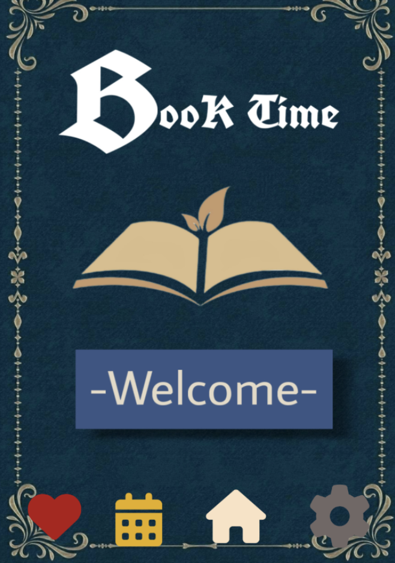

Video about Careers related to Art

I would like to pursue a career related to showcasing my creativity through art, like art thearpy or even working with animals. I did have a summer job at a library and enjoyed it so my previous work diaplays my love for reading. I have learned to think outside the box and understand things quickly when working with codes. I can apply these skills to other subjects by breaking down complex challenges. A goal I have related to computer science was familiarizing myself with code, which I succeeded in doing. I learned that I can be flexible and find interesting subjects to use for my project ideas. Some areas that are my weaknesses is memorizing certain codes as it takes me a while to know what each means and how they work. I would continue familiarizing myself with these to not forget.
Back